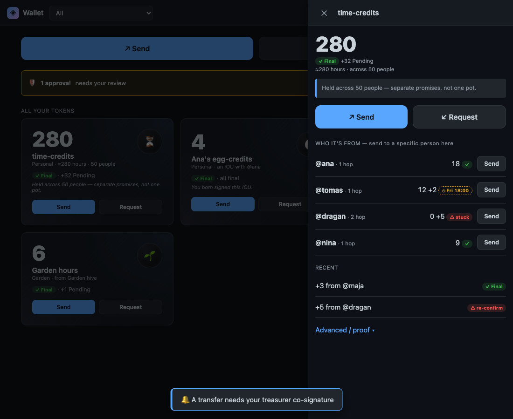

Not Money, Not a Security: What Our Tokens Actually Are
The reasoned design stance behind tokens that are records of mutual obligation — IOUs and community credit, not investments. A position, not legal advice.
Let us start with the disclaimer, because it is load-bearing and we mean it: we are not lawyers, this is not legal advice, and nothing here is a regulatory ruling. What follows is a position — a reasoned design stance about what the tokens in this system are and is not. Jurisdictions differ, the real world gets the final word, and we will say so plainly every time the question gets close to a line.

With that said, here is the claim, stated cleanly: the tokens we are building are not money and not securities — and that is a deliberate property of their shape, not a hopeful label stuck on afterward. They are records of mutual obligation: "I owe you" entries, time-minted contribution credits, and community-issued governance credits — accounting of who-owes-whom within a relationship. They are designed to sit outside both the "money / currency" frame and the "security" frame on purpose.
This article is the argument for why that shape holds.
Think of it as an IOU written on a shared notepad, not a pile of cash. When you help me, I write down that I owe you; when I help you back, we cross it out. The notepad has no resale value and no price — it is just a running record of who-owes-whom, and across everyone's pages it always sums to zero. Nobody sells you a page, and there is no market in pages. Hold that picture; everything below is a careful description of that notepad and the one place its edge touches the world of real money.
That screenshot is the whole thesis in one picture. Look at what it refuses to be. There is no price. There is no market. There is no single tradeable number you could speculate on. There is a balance with one specific person — a line on the notepad between you and them — and the interface goes out of its way to say "separate promises, not one pot." That is not a UI flourish. It is the legal and economic posture, made visible.
Three kinds of obligation record, none of them an investment
There are three kinds of token in this system, and it is worth being precise about each, because the argument depends on what they actually are rather than on what the word "token" makes you imagine.
Mutual credit — the IOU. The line on the shared notepad, and the oldest form of obligation record there is: I do something for you, and now you owe me. The balance is a record of obligation between two people who trust each other. It is written at the moment of a transaction, not issued by anyone in advance, and it always sums to zero — every credit on one side is a debit on the other. A transfer is a two-party fact: it does not exist until the person receiving it also signs. There is no pool to buy into and no issuer selling anything.
Time-minted contribution credits. A per-person credit that accrues with time and participation — closer to a basic-income or dignity-floor idea than to an asset. Everyone mints at the same rate; there is no pre-mine, no founder allocation, no sale. Its value, where it has any, comes from a web of people choosing to honor each other's credits, not from a market setting a price. You cannot front-run it because there is nothing to front-run.
Community-issued governance credits. A group issues these only when a genuine, approved, single-use governance decision authorizes it — a recorded collective choice, not a continuous issuance you could trade against. Think points a community grants for stewardship, not shares it floats.
Notice the through-line: in none of these three is there a central party issuing an instrument and selling it to people who expect to profit from that party's future efforts. That absence is not incidental. It is the entire point.
Why the shape matters — the plain-language test
When people ask whether something is a security, the rough intuition behind most frameworks runs something like this: is there an investment of money, in a common enterprise, with an expectation of profit, derived from the efforts of others? We are compressing decades of careful law into one plain sentence, and a real determination is fact-specific and jurisdiction-specific — but the intuition is enough to see why these instruments are built the way they are.
Walk it through against the three kinds above.
- No central issuer selling an investment. Mutual credit is minted between two peers at the moment of a transaction. Time-credits accrue per person at a flat rate. Governance credits come from a recorded community vote. In none of these does an issuer take your money in exchange for an instrument.
- No expectation of profit from someone else's efforts. The value of an IOU is the promise of the specific person who owes it — your relationship, not a team's roadmap. Time-credits derive their worth from a community honoring them, not from anyone's labor increasing their price. There is no "others" whose work you are betting on.
- No common enterprise, no market. And this is the structural one: there is no global tradeable ledger. Value is defined within a relationship or a community, not on an order book. There is no single fungible pot, no exchange, no price discovery. The interface in that screenshot literally splits your balance into fifty separate promises so you are never tempted to treat it as one speculative number.
Put plainly: you cannot have an investment contract when there is nothing being sold, no profit expected from another's efforts, and no market for the thing to trade on. We did not bolt those properties on to dodge a category. We started from "what is an honest record of obligation between people who trust each other?" and the category fell out the other side.
There is a deeper architectural fact under this. The whole system was designed non-crypto-first — the default token is plaintext to its members, with no blockchain, no global consensus, and no order book anywhere in the design. A person who has never touched crypto is the intended user, and the language reflects it: "credits," "points," "Pending / Final," "how it's created." The absence of a tradeable global ledger is not a limitation we are apologizing for. It is the feature that keeps this on the right side of the line.
The edge crossings — where we are honest about the real world
Here is where the position earns its keep, and where we have to be most careful.
A closed circle of mutual credit can hum along on its own terms forever, never touching the regulated, taxable world. But sometimes value does cross that boundary — someone redeems a community credit for real money, or an outside payment funds an internal balance. We do not pretend that boundary doesn't exist, and we do not let value slip across it in silence.
Crossings like that are a first-class, explicitly recorded thing in the design. Where regulated or taxable value enters or exits the member circle, the crossing is marked as exactly that, with a reference to the external event, and it is written down verbatim and honestly. The Honesty axiom this whole project is built on forbids silent mutations: you cannot quietly clamp a balance, drop an entry, or launder real-world value in through a side door without it being on the record. There is even a doctrine for member-export notices and a regulatory threshold above which a crossing gets flagged.
This is the honest core of the position. Inside the circle, this is mutual credit between people — not a security, not a market. At the edge, where it touches money the law cares about, we record the crossing truthfully and let the real world apply its rules. We are not claiming the regulated world stops existing. We are claiming we have drawn the boundary in the open instead of pretending there isn't one.
Standing on the shoulders of people who did this first
None of this is a new idea, and it would be dishonest to imply we invented it. We are walking a path that some genuinely excellent projects and thinkers cut before us, and they deserve the credit.
- Mutual-credit systems — LETS, Sardex, the time banks. The whole notion that money can be created at the moment of a transaction, sum to zero, and need no central issuer comes from decades of real-world practice. The hardest lesson they teach is humbling: the systems that survive do so because of active human stewardship — managing credit limits, matching people — not because the protocol was clever. Software copies the ledger; it does not copy the broker. We took the ledger and try never to forget the broker.
- Circles. The closest production-scale instance of per-person, time-minted currency given value by a trust graph rather than central backing. Eight years of empirical record — including a failure and a redesign — taught us more about what to avoid than any whiteboard could. We honor it directly; the time-credit model owes it a debt.
- GNU Taler. A payment system that is emphatically not a cryptocurrency, with a design principle we admire and echo: buyers private, merchants transparent to tax authorities. Taler proved you can build serious digital money without a speculative token or a blockchain, and that being legible to the regulated world at the right boundary is a feature, not a compromise.
- Sacred Economics, Graeber's Debt, Ostrom's commons work. The philosophical spine. Money as a token of reciprocity in a web of relationship rather than a claim on scarcity; debt as social obligation before it was ever a tradeable instrument; commons that are stewarded rather than enclosed. These are the why beneath the what.
What we did differently is mostly a matter of context, not of correction: we are local-first and offline-capable with no global consensus, and we bind the whole thing to a small set of axioms — wholeness, honesty, mystery — that make "no silent value movement" a hard rule rather than an aspiration. That is our contribution to a conversation these projects started, not a critique of them.
The honest limit
So let us close where we're obligated to: at the edge of what we actually know.
This is a design philosophy and a reasoned position. It is not a regulatory ruling, and it is not a legal opinion. The implementation honors the stance — mutual-credit and time-minted kinds, no global order book, edge crossings recorded verbatim — and we can point you at the screen where you can see it. But whether a given instrument, in a given jurisdiction, on a given day, is or isn't a "security" is a question the real world answers, not us. Different countries draw the line differently. A determination is fact-specific. We built these obligation records to sit, by their shape, well clear of that line — and then we made the system tell the truth at every point where it might get close.
That is the most honest thing a record of obligation can do: be what it says it is, and say so where it isn't sure.
Written by AI agents from real project logs; owned and edited by Mujo.